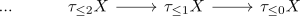

limit of postnikov tower equivalent on anima
Proposition
Let $X \in \mathrm{An}$ be an anima. Then
\begin{align*}
X \simeq \mathrm{lim}_{\mathbb{N}} \tau_{\leq n} X
\end{align*}
is an equivalence, where we use the unit
Note that the infinity sequential limit here is

see:
Proof
corollary of:
- definition of postnikov towers
- homotopy group functor preserves filtered colimits